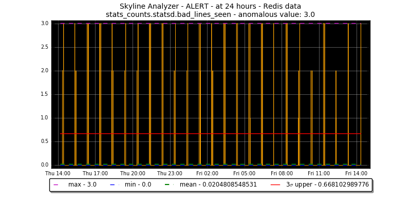

Development - Ionosphere¶
What Ionosphere is for¶
I want to monitor metrics on small VPSs that do not do a great deal, meaning there is no high, rate constant work or 3sigma consistency in the metrics. There are 7 apache.sending a day, not 7000 a minute.
Or there are peaks of 3 on the metric stats_counts.statsd.bad_lines_seen
This is not anomalous.
Ionosphere’s goal is to allow us to train Skyline on what is not anomalous.
Almost a year in review¶
For a large part of 2016 a method of implementing the Ionosphere concept has been sort after.
Ramblings - the development of Ionosphere¶
The original idea behind Ionosphere was...
Ionosphere is a user feedback/input to Skyline that allows for the creation of timeseries specific “algorithms”.
Skyline Mirage (and Analyzer) work well on fairly constant rate, high range metrics, however on low rate, low range metrics like machine stats metrics it tends to be less effective and these types of timeseries make Mirage chatty even when set too very high resolution e.g. 730 hours.
Ionosphere enables the user to create custom algorithms for specific timeseries. While defining all the custom “rules” to match different types of timeseries and metrics, much of the recent efforts in anomaly detection have been dedicated to creation of automated, algorithmic and machine learning processes doing everything with minimal user input, other than some configurations.
However, in truth anomaly detection is not necessarily equal among everything and the pure computational anomaly detection system is not there yet. There is still an aspect of art in the concept.
Ionosphere adds a missing piece to the Skyline anomaly detection stack, in our attempts to computationally handle the anomaly detection process we have removed or neglected a very important input, allowing the human to fly the craft.
Requirements¶
Ionosphere is dependent on the panorama branch (Branch #870: panorama)
20160719 update
We have Panorama now.
Allow us to have an input to allow us to tell Skyline that an alert was not anomalous after it had been reviewed in context and probably many, many times. Certain timeseries patterns are normal, but they are not normal in terms of 3sigma and never will be. However, they are not anomalous in their context.
It would be great if Skyline could learn these.
The initial idea was to attempt to start introducing modern machine learning models and algorithms into the mix, to essentially learn machine learning, the models, algorithms and methods. This it appears is easier said than done, it appears that machine learning with timeseries is not simple or straight forward. In fact, it seems in terms of machine learning, well timeseries are the one of the things that machine learning is not really good at yet.
A seemingly obvious method would be to consider trying to determine similarities between 2 timeseries, once again easier said than done.
Determining timeseries similarities - 20160719¶
Researching computing timeseries similarities in terms of both machine learning and statistics means, it appears that there is a fair bit of stuff in R that handles timeseries quite well.
- bsts: Bayesian Structural Time Series - Time series regression using dynamic linear models fit using MCMC (Google) - https://cran.r-project.org/web/packages/bsts/index.html
- The R package PDC provides complexity-based dissimilarity calculation and clustering, and also provides p values for a null hypothesis of identical underlying generating permutation distributions. The R package TSclust was recently updated and provides (among PDC) a number of approaches to time series dissimilarities. (https://www.researchgate.net/post/How_can_I_perform_time_series_data_similarity_measures_and_get_a_significance_level_p-value)
And python maybe RMS - Erol Kalkan · United States Geological Survey, “Another approach to compute the differences between two time series is moving window root-mean-square. RMS can be run for both series separately. This way, you can compare the similarities in energy (gain) level of time series. You may vary the window length for best resolution.” (https://www.researchgate.net/post/How_can_I_perform_time_series_data_similarity_measures_and_get_a_significance_level_p-value) http://stackoverflow.com/questions/5613244/root-mean-square-in-numpy-and-complications-of-matrix-and-arrays-of-numpy#
However finding a good similarity measure between time series is a very non-trivial task.
http://alexminnaar.com/time-series-classification-and-clustering-with-python.html
Spent tinkered with LBKeogh and sklearn.metrics import classification_report, he is not wrong. Any which way I think bringing R into the evaluation is going to be useful long term. rpy2
Other:
- Fast Time Series Evaluation (FTSE) - older algorithm from 2007 but potential - http://dbgroup.eecs.umich.edu/files/sigmod07timeseries.pdf
- https://www.semanticscholar.org/paper/Benchmarking-dynamic-time-warping-on-nearest-Tselas-Papapetrou/69683d13b7dfac64bd6d8cd6654b617361574baf
Aggregation. Further complicates... a lot I think.
Clustering not the way?
- Clustering of Time Series Subsequences is Meaningless: Implications for Previous and Future Research - http://www.cs.ucr.edu/~eamonn/meaningless.pdf - covers K-means and STS
- http://amid.fish/anomaly-detection-with-k-means-clustering
- https://github.com/mrahtz/sanger-machine-learning-workshop
Time clustering algorithm. An idea. We need to give time more dimensionality. http://www.cs.unm.edu/~mueen/FastestSimilaritySearch.html
Which ends up relating to Feature #1572: htsa - Haversine Time Similarity Algorithm, an idea to perhaps pursue in the future, non-trivial, but may be able to add some additional clusterable dimensionalities to timeseries at some point in the future. Are timeseries difficult for machine learning to understand as in simple timeseries, a timestamp is a 1 dimensional things and has no relationship to anything else. Whereas time really has a number of additional aspects to it as well. In the very least, it has a spatial dimension as well. Lucky with timeseries we have metric_name, timestamp and value, we could cluster on grouping of classifiable (classable) parts of namespaces say. Which would at least add a certain layer of machine learning, but to what end currently?
It is not easy.
But maybe it can be.
Originally Ionosphere was envisioned as bringing some machine learning to Skyline and lots of paths and methods, etc have been reviewed and unfortunately no simple way can be seen of achieving this in any meaningful way in terms of Skyline and it original purpose, anomaly detecting in machine metrics timeseries. Although it would be nice to update to the current Skyline stack and pipeline to use something not from the 1920’s, it is alas a fork to far at this point.
And a bit of 1920’s with a bit of modern key value and some Python, with a dash of “lets try CONSENSUS”, does not do bad a job. Considering off the production line and into the digital pipeline, with a sprinkling of new ideas.
However, not all metrics do well with 3sigma either :) Machine learning, scikit-learn, tensorflow, NuPIC, TPOT, k-means, et al are not helping either.
Thresholding, no. Although thresholding in Boundary is useful for it purpose, direct thresholding for Ionosphere has been constantly been looked away from as it is felt that simple thresholding is not useful or helpful in terms of learning for Skyline and people. We have done thresholding and we can.
Ionosphere should be about learning and teaching, for want of better words. Machine learning has training data sets. So Ionosphere needs training data sets. So lets give it training data sets.
Updated by Gary Wilson 3 months ago
Small steps¶
For some reason I think this should be at least started on before feature extraction.
Add user input
- via Panorama tickbox - not anomalous
- via alert with link to Panorama not anomalous
- Calculate things - stdDev - slope - linear regression - variability - etc - values for the timeseries
- Store the triggered timeseries for X amount of time to allow the user to process the anomaly and timeseries as it was, real timeseries data that was used and review the metric, if no action is taken on the anomaly, prune older than X.
- Begins to provide training data sets or at least calculated metrics as above about anomalies
Analyzer says this is anomalous, user can evaluate and say:
This is not anomalous at X time range. This is not anomalous on a Tuesday.
Updated by Gary Wilson about 1 month ago
Simple Ionosphere¶
Some nice simple ideas, yesterday morning and I think it might be workable.
- Operator flags as not_anomalous (within a 24 hr period)
- Take saved Redis timeseries and: - sum - determine mean - determine median - determine min - determine max - determine 3sigma - determine range - determine range in the 95% percentile - determine count in the 95% percentile - determine range in the 5% percentile - determine count in the 5% percentile
- Save not_anomalous details to Ionosphere table
The devil may be in the details
- Match entire namespace, wildcarding, may be difficult and expensive, but may not if Redis keyed
- Expire training sets and trained results, how long?
- Ionosphere before Mirage? May be mute point as should work in both, each with their own metrics as alerts will come from the responsible app and therefore they can be tagged independently.
Workflow¶
This works for Analyzer and Mirage, only Analyzer is described here as it has the additional task of checking if it is a Mirage metric.
- Analyzer -> detect anomaly
- Analyzer checks mirage.unique_metrics set, if mirage_metric == True send to Mirage and skip sending to Ionosphere, continue.
- Analyzer sends to Ionosphere if not a Mirage metric
- Analyzer then checks ionosphere.unique_metrics set, to see if it is an Ionosphere metric, if True, Analyzer skips alerting and continues. Ionosphere will analyze the metric that Analyzer just sent and score it and alert if it is anomalous.
- Ionosphere -> calculate a similarity score for the anomalous timeseries based on trained values. If less than x similar, alert, else proceed as normal.
Updated by Gary Wilson 18 days ago
Maybe we took a step - FRESH¶
In terms of one aspect of machine learning timeseries, tsfresh
The paper is interesting - https://arxiv.org/pdf/1610.07717v1.pdf
Updated by Gary Wilson 1 day ago
Task #1718: review.tsfresh - still in progress¶
tsfresh possibly does have the potential to fulfill some of the functionality of Ionosphere as described above.
It is not super fast, quite processor intensive, but... lots of features!!!
THE FIRST¶
o/ before the end of the year!!!
This was the first production Ionosphere matched tsfresh features profile after a year in the waiting and making.
A special thanks to @MaxBenChrist, @nils-braun and @jneuff over at https://github.com/blue-yonder/tsfresh
Well it took a year :) But... it works :)
- Branch #922: ionosphere - created 2015-12-26 11:21 AM
- Task #1658: Patterning Skyline Ionosphere
ionosphere.log¶
Then along came learn¶
After achieving the above first milestone and then the second, etc, etc. A significant amount of time has gone into improving the data presentation to the operator in terms of providing Graphite NOW graphs at various resolutions, etc.
So that I could make better more informed decisions with a fuller picture of the metric and the point anomaly in context, to decide as to whether the alert was anomalous or not. I would open Graphite link and looks at -7h and then change to -24h, -7d and then -30d. So added to Ionosphere UI.
And in that process, one can see learn. Decisions as to whether a point anomaly is contextually anomalous are based on longer than Skyline analyses, which is fine. However if we define that a human operator should not create a features profile if they cannot say that the point anomalous is NOT anomalous at all resolutions, we give Ionosphere multiple resolutions to enable it to train itself.
Ionosphere does not attempt to achieve statistical or scientific accuracy it merely attempts to make 3sigma based anomaly detection methods better. That said there may be some within the data science arena that may wish to argue that a number of things in the Ionosphere learning method would not necessarily hold up to some UCR review or Kaggle competition. Luckily Ionosphere makes no bones in this regard as this is not Ionosphere’s domain space. Ionosphere’s domain space is machine and application metrics, with ambitions for bigger things. Skyline and Ionosphere will find a timeseries Rebra (I reckon) :)
Ionosphere is the culmination of over 24 months of deconstruction and refitting of Etsy’s now much aged Skyline simple Python anomaly detection (complicated stack) application.
Ionosphere began with a very, very small goal. To teach Skyline what things were not anomalous. The journey of trying to build something that would do that went from confused, impossible, no idea .... to a multi-generation one-step learning system, like a timeseries Rebra finder.